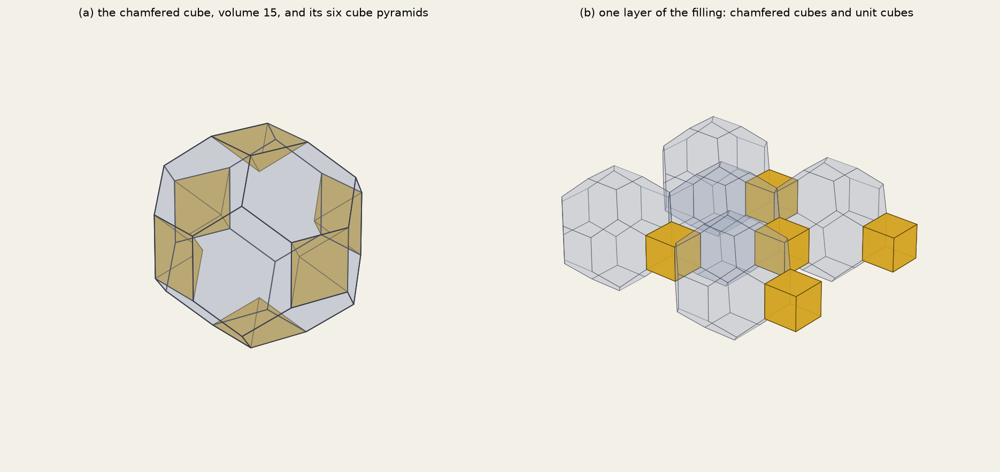

The rhombic dodecahedron is a cube with a square pyramid on each of its six faces, and cut through six of its corners it falls into two halves (a Hemi RD, volume 1 when the whole has volume 2). The cut face is an elongated hexagon (DICTO's term): sides 1, √3/2, √3/2, 1, √3/2, √3/2, the long sides opposite each other, the very hexagon that will appear on the chamfered cube. In Polyhedraverse DICTO built a Hemi RD and attached thirteen more to its faces. He saw three things in the result: its hexagons are irregular, with the long sides opposite; its six open squares could be filled with pyramids cut from a cube; and those squares echo the squares of the permutohedron. This chapter proves what he saw and shows where the echo holds and where it stops.
Proof. The volume of a zonotope is the sum of |det| over its triples of generators: 1 (the three axes) + 6 (two axes with one diagonal) + 6 (one axis with two diagonals) + 2 (three diagonals) = 15. DICTO's build, read from his world export with its exact transforms, has 14 pieces of volume 1 and its hull matches Z to 10−9; the missing volume 1 = 6 · ⅙ is the six pyramids, each found empty under its square (analyse_build.py). ∎
Corollary 4.2. The chamfered cube is not a permutohedron. By Chapter 1, every 2-dimensional face of a permutohedron is a truncated triangle (sides alternating) or a rectangle; the hexagons of Z are elongated hexagons, their long sides opposite each other as DICTO saw, not alternating, so they are not truncated triangles. The difference is one of symmetry (DICTO): a regular hexagon has both a third-turn and a half-turn; the truncated triangle keeps the third-turn and loses the half-turn (opposite sides unequal), the elongated hexagon keeps the half-turn (opposite sides equal and parallel, two mirrors, like a rectangle) and loses the third-turn. Every face of a zonohedron has the half-turn, so the chamfered cube's hexagons had to be elongated.

Proof. No two pieces overlap: each of the 487 pairs within reach is separated by an exact plane (a face normal of either piece or the cross product of an edge direction of each), checked in rational arithmetic. Each lattice point carries volume 15 + 1 = 16, the volume of a cell of L, so the pieces have density 1; a packing of convex bodies with density 1 leaves no gap. ∎ (exact_fill.py)
Remark 4.4. Z alone does not fill space by translations: round a hexagon's long sides its zone has 8 faces, and a convex body that tiles by translations has every belt of 4 or 6 faces (Venkov 1954; McMullen 1980). The cubes are needed.
Where the echo holds. The six squares of Z sit on the cube axes exactly where the 3D permutohedron has its six squares, and in the 4D permutohedron those squares are where a second kind of cell, the hexagonal prism, joins, as here a second kind of piece, the cube, does. The hexagons differ: twelve elongated hexagons on the rhombic dodecahedron's face directions here, eight truncated triangles on the body diagonals there. The echo is in the squares, not in the hexagons.
DICTO: the Hemi RD build in Polyhedraverse (11 November 2026; the world export with exact transforms is in the study); #105 DICTO 1:2 Truncated Octahedron: The 4D Vacuus of the Permutohedron (the 4D permutohedron's prisms); The Permutohedron Paradigm, Chapter 1 (the face lemma). B. A. Venkov, On a class of Euclidean polyhedra, Vestnik Leningrad. Univ. Ser. Mat. Fiz. Him. 9 (1954) 11–31; P. McMullen, Convex bodies which tile space by translation, Mathematika 27 (1980) 113–121, doi:10.1112/S0025579300010007.
Further reading. J. Kepler, Strena seu de nive sexangula (1611): the rhombic dodecahedron in the packing of equal spheres · E. S. Fedorov, Nachala ucheniya o figurakh (1885): the parallelohedra · H. S. M. Coxeter, Regular Polytopes, 3rd ed., Dover (1973) · G. M. Ziegler, Lectures on Polytopes, Graduate Texts in Mathematics 152, Springer (1995), doi:10.1007/978-1-4613-8431-1. Each DOI checked against its publisher's record (Crossref, 11 November 2026).